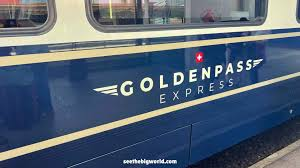
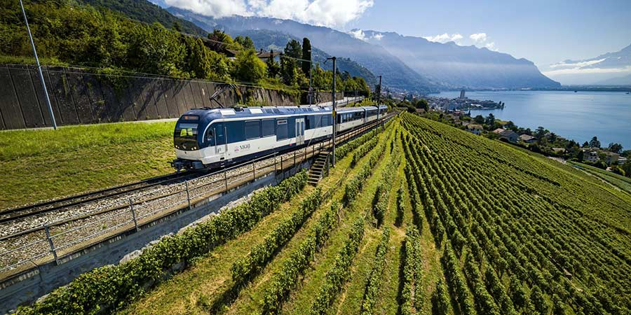
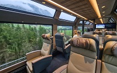
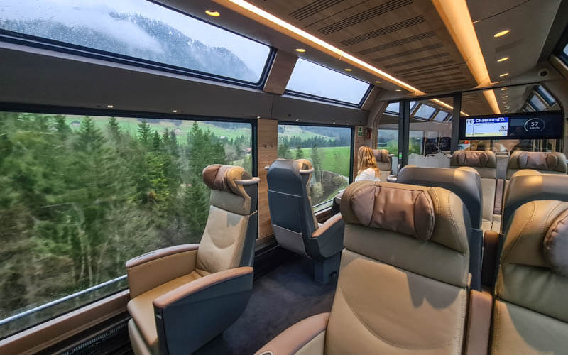

A GoldenPass Express újradefiniálja az Interlaken és Montreux közötti utazási élményt.
Zökkenőmentes utazási élmény
A GoldenPass Express zökkenőmentes és még kényelmesebb utazási élményt nyújt Svájc egyik legfestőibb vasútján. A panorámás vonat naponta akár négyszer köti össze Interlakent Montreux-val, megszakítás nélkül kilátást nyújtva a lélegzetelállító panorámára.
A GoldenPass Express világelső és svájci mestermunka. Végül is az az ötlet, hogy Interlakent és Montreux-t vonatváltás nélkül összekötjük, több mint 100 évvel ezelőtt született. A projekt azonban soha nem valósult meg, mivel a vonal egyes szakaszainak eltérő nyomtávja volt. De ezt a látszólag lehetetlennek tűnő kihívást most már egy zseniális találmány is megoldhatja: állítható forgóvázakkal. Az egyetlen dolog, amit csalódást okozhatsz? Az egész út mindössze 3 óra 15 percig tart. Ezekkel a lenyűgöző kilátásokkal és páratlan kényelemmel az utazás éppolyan lenyűgöző, mint a cél.

Világhírű helyek, három régió
Az utazás a GoldenPass Expressen olyan, mint egy svájci kirándulás lenne. Az út a festői Interlaken városában kezdődik, majd Gstaad, Château-d'Oex és Montbovon érintésével Montreux-ig folytatódik, amely az út utolsó állomása. Természetesen Montreux-ban is kezdheti az utazásodat.
Interlaken nagyszerű bázis számos programhoz, és lenyűgöző kilátást nyújt Eigerre, Mönchre és Jungfraura. A luxus Gstaad bájos faházairól ismert, és a sztárok és a téli sportrajongók kedvelt nyaralóhelye. Château-d'Oex híres a hőlégballonjairól, és ha szerencséd van, talán észreveszel egyet a fent. Montreux természetesen otthont ad az éves Montreux Jazz Fesztiválnak.

Gasztronómiai finomságok
Helyi és nemzetközi finomságokat előre rendelhetünk, így tökéletes kezdet lehet egy izgalmas utazáshoz. Például mi lenne egy pohár pezsgővel és egy adag legjobb kaviárral a svájci Frutigenből? Bár a pezsgőt és a kaviárt kizárólag "Prestige" és első osztályban szolgálják fel, minden utazási osztályban élvezheted a kis, de kifinomult étlapból kiválasztott ételeket.
Prestige utazási osztály

Az első és második osztályú kocsik mellett a két "Prestige" fülke eddig páratlan kényelmet kínál a 3:15 órás utazáshoz. Mindent kínál, amit egy felejthetetlen vonatúttól várhatsz: rengeteg magánéletet, maximális kényelmet egy kis fülkében, és kivételes kulináris kínálatot. Érezd magad kényelmesen a luxus és fűthető bőrüléseken, amelyeket kérésre 180 fokkal lehet elforgatni. Az utazási osztály 40 cm-rel magasabb a többi osztályhoz képest, így még jobb kilátást nyújt a lenyűgöző tájra.